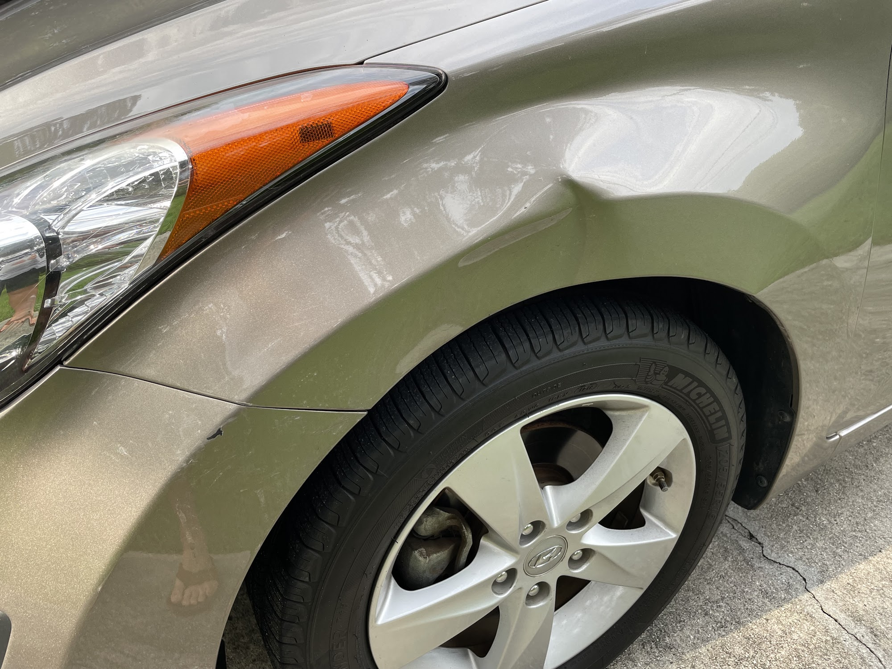

PAINT · COLOR · FINISH
Bring back
the finish.
Auto body repair listings include paint and refinishing. Call to ask whether the shop can help with the paint damage on your vehicle.
CALL 910.392.4777 ↗
PAINTWORK QUESTIONS
Get a clear answer for your vehicle.
Paint work varies with the type of finish, color, panel and prior repairs. A few photos can help start the conversation, but the shop may need to inspect the vehicle before confirming the approach and estimate.
- Paint damage connected to body repairs
- Panel refinishing questions
- Color and finish concerns
- Estimate and timing questions before work begins
Call before visiting to confirm the specific paint service you need.
Ask about your paintwork.
Tell the shop what the finish looks like now.